目录
自从大约三年前我那篇关于 Transformer 家族 的文章以来，已经提出了许多新的 Transformer 架构改进。本文对 2020 年的那篇文章进行了大规模重构和丰富——重新组织了章节层级，并用更新的论文改进了许多部分。2.0 版是旧版本的超集，篇幅大约为其两倍。
符号说明#
| Symbol | Meaning |
|---|---|
| d | The model size / hidden state dimension / positional encoding size. |
| h | The number of heads in multi-head attention layer. |
| L | The segment length of input sequence. |
| N | The total number of attention layers in the model; not considering MoE. |
| \mathbf{X} \in \mathbb{R}^{L \times d} | The input sequence where each element has been mapped into an embedding vector of shape d, same as the model size. |
| \mathbf{W}^k \in \mathbb{R}^{d \times d_k} | The key weight matrix. |
| \mathbf{W}^q \in \mathbb{R}^{d \times d_k} | The query weight matrix. |
| \mathbf{W}^v \in \mathbb{R}^{d \times d_v} | The value weight matrix. Often we have d_k = d_v = d. |
| \mathbf{W}^k_i, \mathbf{W}^q_i \in \mathbb{R}^{d \times d_k/h}; \mathbf{W}^v_i \in \mathbb{R}^{d \times d_v/h} | The weight matrices per head. |
| \mathbf{W}^o \in \mathbb{R}^{d_v \times d} | The output weight matrix. |
| \mathbf{Q} = \mathbf{X}\mathbf{W}^q \in \mathbb{R}^{L \times d_k} | The query embedding inputs. |
| \mathbf{K} = \mathbf{X}\mathbf{W}^k \in \mathbb{R}^{L \times d_k} | The key embedding inputs. |
| \mathbf{V} = \mathbf{X}\mathbf{W}^v \in \mathbb{R}^{L \times d_v} | The value embedding inputs. |
| \mathbf{q}_i, \mathbf{k}_i \in \mathbb{R}^{d_k}, \mathbf{v}_i \in \mathbb{R}^{d_v} | Row vectors in query, key, value matrices, \mathbf{Q}, \mathbf{K} and \mathbf{V}. |
| S_i | A collection of key positions for the i-th query \mathbf{q}_i to attend to. |
| \mathbf{A} \in \mathbb{R}^{L \times L} | The self-attention matrix between a input sequence of lenght L and itself. \mathbf{A} = \text{softmax}(\mathbf{Q}\mathbf{K}^\top / \sqrt{d_k}). |
| a_{ij} \in \mathbf{A} | The scalar attention score between query \mathbf{q}_i and key \mathbf{k}_j. |
| \mathbf{P} \in \mathbb{R}^{L \times d} | position encoding matrix, where the i-th row \mathbf{p}_i is the positional encoding for input \mathbf{x}_i. |
Transformer 基础#
Transformer（为了与其它增强版本区分，我们将其称为“ vanilla Transformer”；Vaswani, et al., 2017）采用编码器-解码器架构，这在许多 注意？注意！ 模型中很常见。后来经过简化的 Transformer 被证明在语言建模任务中也能取得出色性能，例如仅使用编码器的 通用语言模型 或仅使用解码器的 通用语言模型。
注意力与自注意力#
注意力是神经网络中的一种机制，模型可以通过选择性地关注给定数据来学习进行预测。注意力的强度由学习到的权重量化，因此输出通常表现为加权平均。
自注意力是一种注意力机制，模型利用同一样本中其它部分的信息来预测该样本的某一部分。从概念上讲，它与 non-local means 非常相似。还需要注意自注意力具有置换不变性；换句话说，它是作用于集合的操作。
注意力 / 自注意力有多种形式，Transformer（Vaswani et al., 2017）依赖的是缩放点积注意力：给定查询矩阵 \mathbf{Q}、键矩阵 \mathbf{K} 和值矩阵 \mathbf{V}，输出是值向量的加权和，其中分配给每个值位置的权重由查询与对应键的点积决定：
对于一个查询向量和一个键向量 \mathbf{q}_i, \mathbf{k}_j \in \mathbb{R}^d（查询和键矩阵中的行向量），我们得到一个标量分数：
其中 \mathcal{S}_i 是第 i 个查询需要关注的键位置集合。
如果感兴趣，可以参考我之前 。注意？注意！
多头自注意力#
多头自注意力模块是 Transformer 的核心组件。它不是只计算一次注意力，而是将输入分割成更小的块，然后并行地在每个子空间上计算缩放点积注意力。独立的注意力输出被简单地拼接起来，再经过线性变换得到期望的维度。
其中 [.;.] 是拼接操作。\mathbf{W}^q_i, \mathbf{W}^k_i \in \mathbb{R}^{d \times d_k/h}, \mathbf{W}^v_i \in \mathbb{R}^{d \times d_v/h} 是权重矩阵，用于将大小为 L \times d 的输入嵌入映射为查询、键和值矩阵。\mathbf{W}^o \in \mathbb{R}^{d_v \times d} 是输出的线性变换。所有权重都在训练过程中学习得到。
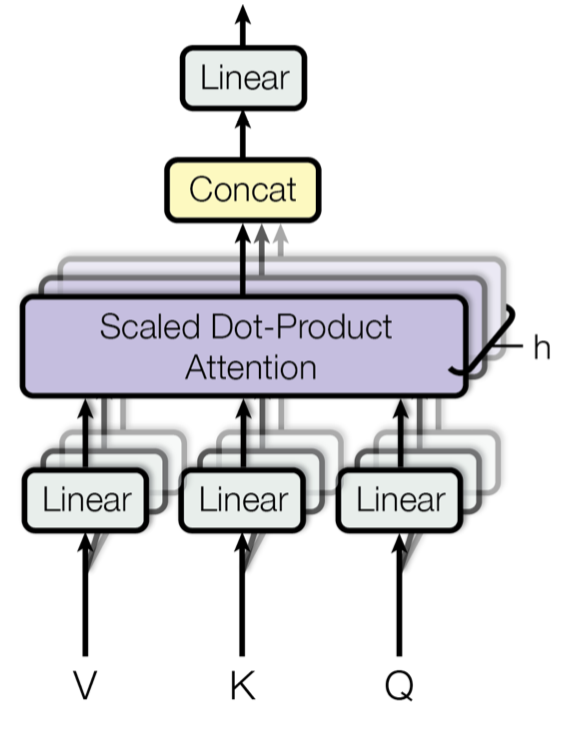
编码器-解码器架构#
编码器生成基于注意力的表示，能够从大量上下文中定位特定信息。它由 6 个相同的模块堆叠而成，每个模块包含两个子模块：一个多头自注意力层和一个逐位置的全连接前馈网络。所谓逐位置，是指对序列中的每个元素应用相同的线性变换（使用相同权重）。这也可以看作是滤波器大小为 1 的卷积层。每个子模块都有残差连接和层归一化。所有子模块输出的数据维度均为 d。
Transformer 解码器的功能是从编码后的表示中检索信息。其架构与编码器非常相似，只是每个重复模块中解码器包含两个多头注意力子模块而不是一个。第一个多头注意力子模块被加上掩码，以防止位置关注未来的信息。
位置编码#
由于自注意力操作具有置换不变性，使用合适的位置编码来为模型提供顺序信息非常重要。位置编码 \mathbf{P} \in \mathbb{R}^{L \times d} 与输入嵌入的维度相同，因此可以直接加到输入上。vanilla Transformer 考虑了两种编码方式：
正弦位置编码#
正弦位置编码定义如下，给定 token 的位置 i=1,\dots,L 和维度 \delta=1,\dots,d：
这样，位置编码的每个维度都对应不同维度上具有不同波长的正弦曲线，从 2\pi 到 10000 \cdot 2\pi。
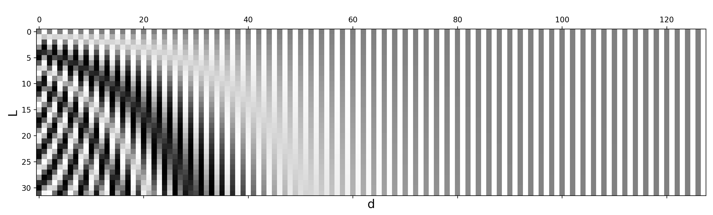
可学习位置编码#
可学习位置编码为每个元素分配一个可学习的列向量来编码其绝对位置（Gehring, et al. 2017），并且这种编码可以在每一层学习不同的参数（Al-Rfou et al. 2018）。
相对位置编码#
Shaw et al. (2018) 将相对位置信息融入 \mathbf{W}^k 和 \mathbf{W}^v。最大相对位置被裁剪到一个最大绝对值 k，这种裁剪操作使模型能够泛化到未见过的序列长度。因此，考虑 2k + 1 个唯一的边标签，并将 \mathbf{P}^k, \mathbf{P}^v \in \mathbb{R}^{2k+1} 表示为可学习的相对位置表示。
Transformer-XL（Dai et al., 2019）提出了一种基于键和查询点积重参数化的相对位置编码。为了使位置信息在片段之间连贯地流动，Transformer-XL 转而对相对位置进行编码，因为知道位置偏移通常就足以做出良好预测，即在键向量 \mathbf{k}_{\tau, j} 和其查询 \mathbf{q}_{\tau, i} 之间的 i-j。
如果省略 softmax 中的标量 1/\sqrt{d_k} 和归一化项，但包含位置编码，我们可以将位置 i 的查询与位置 j 的键之间的注意力分数写为：
Transformer-XL 对上述四个项进行如下重参数化：
旋转位置嵌入#
旋转位置嵌入（Rotary Position Embedding，RoPE；Su et al. 2021）使用 旋转矩阵 对绝对位置进行编码，并将每一层注意力的键和值矩阵与之相乘，从而在每一层注入相对位置信息。
当将相对位置信息编码到第 i 个键与第 j 个查询的内积中时，我们希望将函数构造为只与相对位置 i-j 相关的形式。旋转位置嵌入（RoPE）利用欧几里得空间中的旋转操作，将相对位置嵌入简化为按位置索引比例旋转特征矩阵。
给定一个向量 \mathbf{z}，如果我们想将其逆时针旋转 \theta，可以将其乘以一个旋转矩阵得到 R\mathbf{z}，其中旋转矩阵 R 定义为：
当推广到更高维空间时，RoPE 将 d 维空间分为 d/2 个子空间，并为位置 i 的 token 构造一个大小为 d \times d 的旋转矩阵 R：
论文中 \Theta = {\theta_i = 10000^{-2(i−1)/d}, i \in [1, 2, …, d/2]}。注意，这本质上等价于正弦位置编码，只是被表示为旋转矩阵的形式。
键和查询矩阵都通过与该旋转矩阵相乘来融入位置信息：
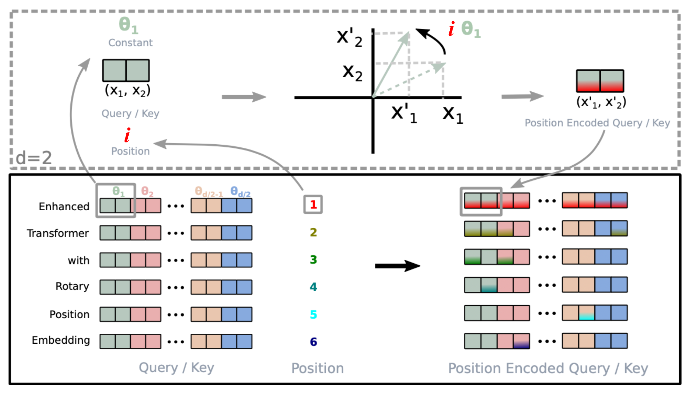
更长上下文#
Transformer 模型在推理时的输入序列长度受训练时使用的上下文长度上限限制。简单地增加上下文长度会导致时间（\mathcal{O}(L^2d)）和内存（\mathcal{O}(L^2)）消耗显著增加，并且可能因硬件限制而无法支持。
本节介绍几种 Transformer 架构上的改进，以更好地在推理时支持长上下文；例如使用额外记忆、设计更好的上下文外推机制，或引入循环机制。
上下文记忆#
vanilla Transformer 具有固定且有限的注意力跨度。模型在每次更新时只能关注同一片段内的其它元素，信息无法在分离的固定长度片段之间流动。这种上下文分割导致了几个问题：
Transformer-XL（Dai et al., 2019；“XL”表示“extra long”）修改了架构，通过额外的记忆在片段之间复用隐藏状态。通过持续使用来自前一个片段的隐藏状态，将片段之间的循环连接引入模型。
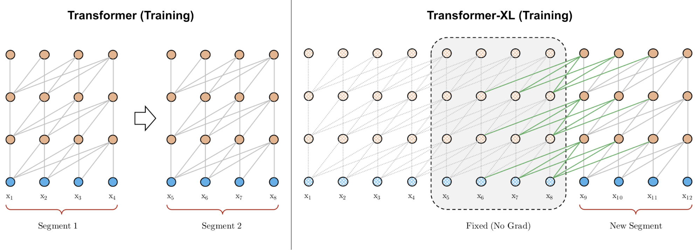
让我们将模型中第 n 层、第 (\tau + 1) 个片段的隐藏状态记为 \mathbf{h}_{\tau+1}^{(n)} \in \mathbb{R}^{L \times d}。除了同一片段最后一层的隐藏状态 \mathbf{h}_{\tau+1}^{(n-1)} 外，它还依赖于前一个片段同一层的隐藏状态 \mathbf{h}_{\tau}^{(n)}。通过融入来自先前隐藏状态的信息，模型将注意力跨度向过去大幅扩展，跨越多个片段。
注意，键和值都依赖于扩展的隐藏状态，而查询只使用当前步的隐藏状态。拼接操作 [. \circ .] 沿着序列长度维度进行。Transformer-XL 需要使用相对位置编码，因为如果使用绝对位置编码，前一个和当前片段会被赋予相同的编码，这不是我们想要的。
Compressive Transformer（Rae et al. 2019）通过压缩过去的记忆来扩展 Transformer-XL，从而支持更长的序列。它在每一层显式地添加大小为 m_m 的记忆槽，用于存储该层的过去激活以保留长上下文。当某些过去的激活变得足够“老”时，它们会被压缩并保存到每一层额外的大小为 m_{cm} 的压缩记忆中。
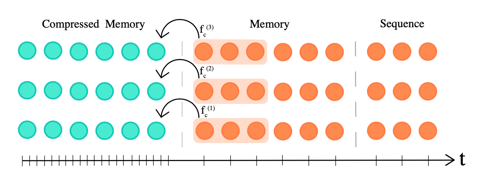
普通记忆和压缩记忆都是先进先出（FIFO）队列。给定模型上下文长度 L，压缩率 c 对应的压缩函数定义为 f_c: \mathbb{R}^{L \times d} \to \mathbb{R}^{[\frac{L}{c}] \times d}，将 L 个最老的激活映射为 [\frac{L}{c}] 个压缩记忆元素。压缩函数有以下几种选择：
Compressive Transformer 有两个额外的训练损失：
具有大小为 m 的记忆的 Transformer-XL 的最大时间范围为 m \times N，其中 N 是模型中的层数，注意力代价为 \mathcal{O}(L^2 + Lm)。相比之下，压缩 Transformer 的时间范围为 (m_m + c \cdot m_{cm}) \times N，注意力代价为 \mathcal{O}(L^2 + L(m_m + m_{cm}))。更大的压缩率 c 能在时间范围长度和注意力代价之间提供更好的权衡。
注意力权重从最老到最新的分别存储在三个位置：压缩记忆 → 普通记忆 → 带因果掩码的序列。在实验中，他们观察到从存储在普通记忆中的最老激活，到存储在压缩记忆中的激活，注意力权重有所增加，这表明网络正在学习保留显著信息。
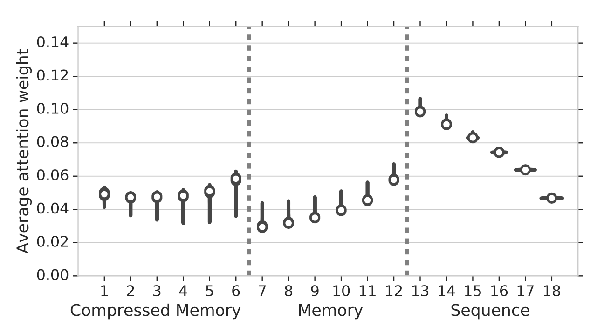
不可微外部记忆#
kNN-LM（Khandelwal et al. 2020）通过线性插值两个模型预测的下一个 token 概率，将一个独立的 kNN 模型与预训练语言模型结合起来。kNN 模型构建在一个外部键-值存储之上，可以存储任意大的预训练数据集或 OOD 新数据集。该数据存储经过预处理，保存大量（LM 上下文的嵌入表示，下一个 token）的配对，最近邻检索发生在 LM 嵌入空间中。由于数据存储可能非常巨大，我们需要依赖快速稠密向量搜索库，例如 FAISS 或 ScaNN。索引过程只需进行一次，在推理时很容易实现并行。
在推理时，下一个 token 的概率是两个预测的加权和：
其中 \mathcal{N} 包含由 kNN 检索到的一组最近邻数据点；d(., .) 是一个距离函数，例如 L2 距离。
根据实验，更大的数据存储规模或更大的 k 与更好的困惑度相关。权重标量 \lambda 需要调优，但一般来说，对于域外数据预计要比域内数据更大，而且更大的数据存储可以承受更大的 \lambda。
SPALM（Adaptive semiparametric language models；Yogatama et al. 2021）同时整合了（1）Transformer-XL 风格的外部上下文隐藏状态作为短期记忆，以及（2）kNN-LM 风格的键-值存储作为长期记忆。
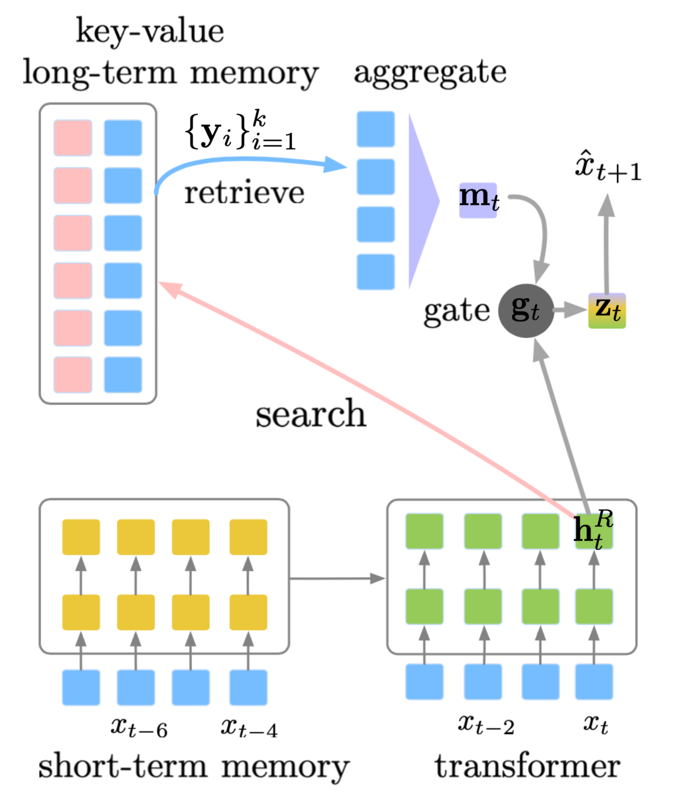
SPALM 运行 kNN 搜索以获取 k 个最具相关上下文的 token。对于每个 token，我们可以得到由预训练 LM 提供的相同嵌入表示，记为 \{\mathbf{y}_i\}_{i=1}^k。门控机制首先使用 \mathbf{h}^R_t（第 R 层 token x_t 的隐藏状态）作为查询，通过一个简单的注意力层聚合检索到的 token 嵌入，然后学习一个门控参数 \mathbf{g}_t 来平衡局部信息 \mathbf{h}^R_t 和长期信息 \mathbf{m}_t。
其中 \mathbf{w}_g 是待学习的参数向量；\sigma(.) 是 sigmoid 函数；\mathbf{W} 是输入和输出 token 共享的词嵌入矩阵。与 kNN-LM 不同，他们没有发现最近邻距离在聚合检索到的 token 时有帮助。
在训练期间，长期记忆中的键表示保持不变，由预训练 LM 产生，但值编码器（即词嵌入矩阵）会得到更新。
Memorizing Transformer（Wu et al. 2022）在仅解码器的 Transformer 顶层附近添加了一个 kNN 增强的注意力层。这个特殊层维护一个 Transformer-XL 风格的先进先出缓存，用于存储过去的键-值对。
局部注意力和 kNN 机制使用相同的 QKV 值。kNN 查找为输入序列中的每个查询返回前 k 个（键，值）对，然后通过自注意力栈处理它们，计算检索到的值的加权平均。两种注意力通过一个可学习的每头门控参数进行组合。为了防止值幅度出现大的分布偏移，缓存中的键和值都被归一化。
他们在 Memorizing Transformer 的实验中发现：
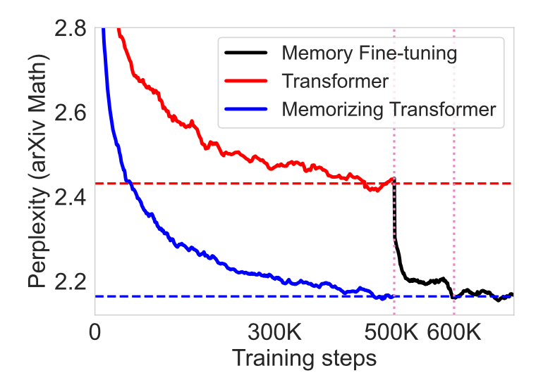
距离增强注意力分数#
距离感知 Transformer（DA-Transformer；Wu, et al. 2021）和带线性偏置的注意力（ALiBi；Press et al. 2022）的出发点相似——为了鼓励模型能够外推到比训练时更长的上下文，我们可以显式地将位置信息根据键和查询 token 之间的距离附加到每一对注意力分数上。
注意，vanilla Transformer 中默认的位置编码只将位置信息加到输入序列上，而后来改进的编码机制则改变每一层的注意力分数，例如旋转位置嵌入，它们与距离增强注意力分数的形式非常相似。
DA-Transformer（Wu, et al. 2021）在每一层将注意力分数乘以一个可学习的偏置，该偏置被构造为键和查询之间距离的函数。不同的注意力头使用不同的参数，以区分对短期与长期上下文的不同偏好。给定两个位置 i, j，DA-Transformer 使用以下加权函数来改变自注意力分数：
其中 \alpha_i 是可学习参数，用于对每个注意力头赋予不同的相对距离权重（头用上标 ^{(i)} 索引）；\beta_i 是可学习参数，用于控制第 i 个注意力头的距离上界和上升斜率。加权函数 f(.) 的设计满足：(1) f(0)=1；(2) 当 \mathbf{R}^{(i)} \to -\infty 时 f(\mathbf{R}^{(i)}) = 0；(3) 当 \mathbf{R}^{(i)} \to +\infty 时 f(\mathbf{R}^{(i)}) 有界；(4) 尺度可调；(5) 函数单调。由 f(\mathbf{R}^{(i)}) 带来的额外时间复杂度为 \mathcal{O}(L^2)，相对于自注意力时间复杂度 \mathcal{O}(L^2 d) 来说很小。额外的内存消耗极小，约为 \mathcal{O}(2h)。
ALiBi（Press et al. 2022）不是使用乘数，而是在查询-键注意力分数上添加一个与成对距离成比例的常数偏置。该偏置引入了强烈的近期偏好，并惩罚距离太远的键。不同注意力头的惩罚以不同速率增加。
其中 \alpha_i 是特定于头的加权标量。与 DA-Transformer 不同，\alpha_i 不是学习得到的，而是固定为一个等比数列；例如对于 8 个头，{\alpha_i} = {\frac{1}{2}, \frac{1}{2^2}, \dots, \frac{1}{2^8}}。整体思想与相对位置编码试图解决的问题非常相似。
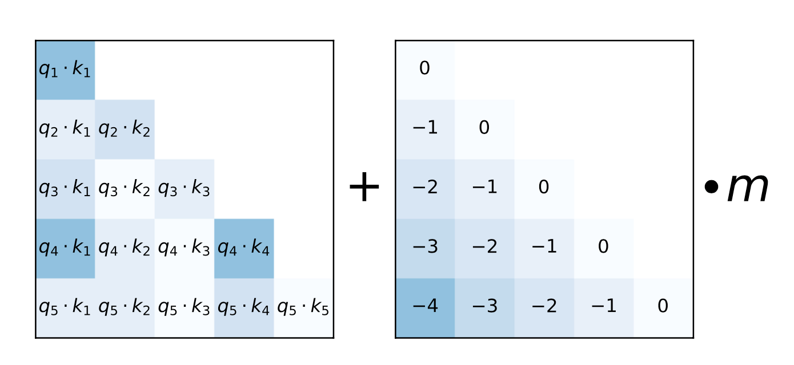
使用 ALiBi，Press et al. (2022) 在训练时使用上下文长度 1024 训练了一个 13 亿参数的模型，并在推理时外推到 2046。
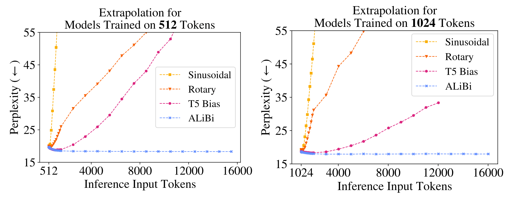
使其具有循环性#
Universal Transformer（Dehghani, et al. 2019）将 Transformer 中的自注意力与 RNN 中的循环机制相结合，旨在同时受益于 Transformer 的长期全局感受野和 RNN 学到的归纳偏置。它不是经过固定数量的层，而是使用 动态调整步数。如果我们固定步数，Universal Transformer 就等价于一个在层之间共享参数的多层 Transformer。Transformer 家族
从高层来看，Universal Transformer 可以看作是一个对每个 token 的隐藏状态表示进行学习的循环函数。该循环函数在所有 token 位置上并行演化，位置之间的信息通过自注意力共享。
给定长度为 L 的输入序列，Universal Transformer 在可调整的步数内迭代地更新第 t 步的表示 \mathbf{h}^t \in \mathbb{R}^{L \times d}。在第 0 步，\mathbf{h}^0 被初始化为与输入嵌入矩阵相同。所有位置在多头自注意力机制中并行处理，然后经过一个循环转移函数。
其中 \text{Transition}(.) 是一个 可分离卷积 或一个全连接神经网络，包含两个逐位置（即分别应用于 \mathbf{A}^t 的每一行）的仿射变换 + 一个 ReLU。
位置编码 \mathbf{P}^t 使用正弦位置信号，但增加了一个时间维度：
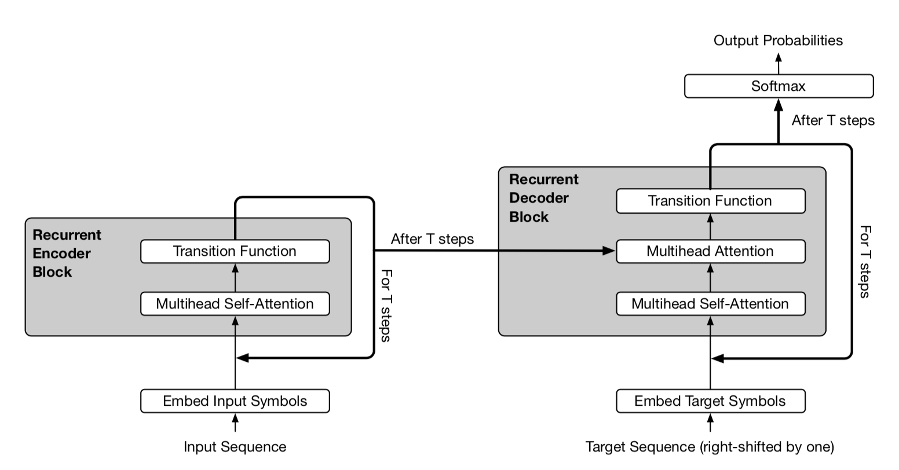
在 Universal Transformer 的自适应版本中，循环步数 T 由 Transformer 家族 动态决定。每个位置都配备了一个动态的 ACT 停止机制。一旦某个 token 的循环块停止，它就不再进行更多循环更新，而是简单地将当前值复制到下一步，直到所有块都停止或达到最大步数限制。
自适应建模#
自适应建模是指能够根据不同输入调整计算量的机制。例如，某些 token 可能只需要局部信息，因此只需要较短的注意力跨度；或者某些 token 相对容易预测，不需要经过整个注意力栈。
自适应注意力跨度#
Transformer 的一个关键优势是能够捕捉长期依赖。根据上下文，模型有时可能更倾向于关注更远的地方；或者一个注意力头可能与另一个有不同的注意力模式。如果注意力跨度能够灵活地调整其长度，并且只在需要时才关注更远的位置，那么它将有助于减少计算和内存开销，从而支持模型中更大的最大上下文长度。
这就是自适应注意力跨度的动机。Sukhbaatar et al (2019) 提出了一种寻求最优注意力跨度的自注意力机制。他们假设不同的注意力头在同一上下文窗口内可能以不同方式分配分数（见图 14），因此最优跨度将按头分别训练。
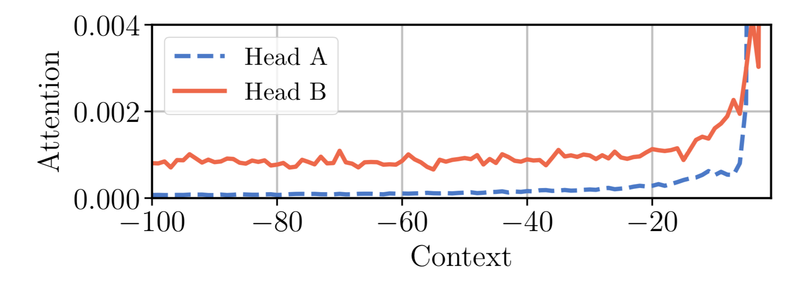
给定第 i 个 token，我们需要计算它与其注意力跨度大小为 s 的其它键之间的注意力权重：
一个软掩码函数 m_z 被加入以控制可调整的有效注意力跨度，它将查询和键之间的距离映射到 [0, 1] 区间。m_z 由 z \in [0, s] 参数化，且 z 是待学习的：
其中 R 是一个超参数，用于定义 m_z 的软度。
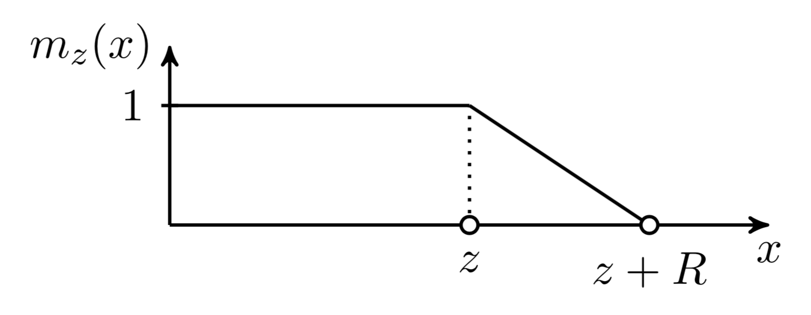
软掩码函数被应用于注意力权重中的 softmax 元素：
在上述方程中，z 是可微的，因此它与模型的其他部分联合训练。参数 z^{(i)}, i=1, \dots, h 按注意力头分别学习。此外，损失函数对 \sum_{i=1}^h z^{(i)} 有一个额外的 L1 正则化。
使用 ，该方法可以进一步被增强为具有灵活的注意力跨度长度，能够根据当前输入动态调整。注意力头在时刻 t 的跨度参数 z_t 是一个 sigmoid 函数 z_t = S \sigma(\mathbf{v} \cdot \mathbf{x}_t +b)，其中向量 \mathbf{v} 和偏置标量 b 与其他参数一起联合学习。Transformer 家族
在具有自适应注意力跨度的 Transformer 实验中，Sukhbaatar, et al. (2019) 发现一个普遍趋势：较低层不需要非常长的注意力跨度，而较高层中的少数注意力头可能会使用特别长的跨度。自适应注意力跨度还能大幅减少 FLOPS 数量，尤其是在具有许多注意力层和大上下文长度的大型模型中。
深度自适应 Transformer#
在推理时，很自然地可以假设某些 token 更容易预测，因此不需要和其他 token 一样多的计算。因此，我们可能只需要让其预测经过有限数量的层，就能达到速度和性能之间的良好平衡。
深度自适应 Transformer（Elabyad et al. 2020）和置信自适应语言模型（CALM；Schuster et al. 2022）都受此想法启发，学习预测不同输入 token 所需的最优层数。
深度自适应 Transformer（Elabyad et al. 2020）在每一层都附加一个输出分类器，根据该层的激活产生退出预测。分类器的权重矩阵可以每层不同，也可以跨层共享。在训练过程中，模型采样不同的退出序列，从而用不同层的隐藏状态进行优化。学习目标整合了在不同层预测的似然概率 n=1, \dots, N：
自适应深度分类器输出一个参数化分布 q_t。它使用交叉熵损失针对一个 oracle 分布 q^*_t 进行训练。论文探索了三种学习此类分类器 q_t 的配置。
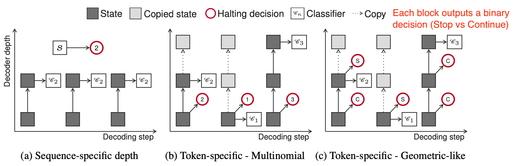
在推理时，需要对做出退出决策的置信度阈值进行校准。深度自适应 Transformer 通过网格搜索在验证集上找到这样的阈值。CALM（Schuster et al. 2022）应用 Learn then Test (LTT) 框架（Angelopoulos et al. 2021）来识别一组有效的阈值，并选择最小值作为推理时的阈值。除了训练每层退出分类器外，CALM 还探索了其他自适应深度预测方法，包括 softmax 响应（即前两个 softmax 输出的差值）和隐藏状态饱和度（即 \cos(\mathbf{h}^n_t, \mathbf{h}^{n+1}_t)）作为退出决策的置信度分数。他们发现 softmax 响应能带来最佳的推理加速。
高效注意力#
vanilla Transformer 的计算和内存代价随序列长度二次增长，因此很难应用于非常长的序列。许多针对 Transformer 架构的效率改进都与自注意力模块有关——让它更便宜、更小或运行更快。参见关于高效 Transformer 的综述论文（Tay et al. 2020）。
稀疏注意力模式#
固定局部上下文#
一种使自注意力开销更小的简单替代方案是将每个 token 的注意力跨度限制在局部上下文内，这样自注意力的复杂度就随序列长度线性增长。
这个想法由 Image Transformer（Parmer, et al 2018）引入，它使用编码器-解码器 Transformer 架构将图像生成表述为序列建模：
让我们将当前要生成的像素的表示记为查询 \mathbf{q}。其它位置的表示将被用于计算 \mathbf{q}，它们是键向量 \mathbf{k}_1, \mathbf{k}_2, \dots，并共同构成一个记忆矩阵 \mathbf{M}。\mathbf{M} 的范围定义了像素查询 \mathbf{q} 的上下文窗口。
Image Transformer 引入了两种类型的局部化 \mathbf{M}，如下图所示。
跨步上下文#
Sparse Transformer（Child et al., 2019）通过稀疏矩阵分解引入了因子化自注意力，使得可以在长度高达 16,384 的序列上训练具有数百层的稠密注意力网络，否则这在现代硬件上将是不可行的。
给定一组注意力连接模式 \mathcal{S} = \{S_1, \dots, S_n\}，其中每个 S_i 记录了第 i 个查询向量需要关注的键位置集合。
注意，虽然 S_i 的大小不固定，但 a(\mathbf{x}_i, S_i) 总是大小为 d_v，因此 \text{Attend}(\mathbf{X}, \mathcal{S}) \in \mathbb{R}^{L \times d_v}。
在自回归模型中，一个注意力跨度被定义为 S_i = \{j: j \leq i\}，因为它允许每个 token 关注过去的所有位置。
在因子化自注意力中，集合 S_i 被分解为一棵依赖树，使得对于每一对满足 j \leq i 的 (i, j)，都存在一条从 i 连接回 j 的路径，并且 i 可以直接或间接地关注 j。
精确地说，集合 S_i 被划分为 p 个不相交的子集，其中第 m 个子集记为 A^{(m)}_i \subset S_i, m = 1,\dots, p。因此，输出位置 i 与任意 j 之间的路径的最大长度为 p + 1。例如，如果 (j, a, b, c, \dots, i) 是 i 和 j 之间的索引路径，我们就有 j \in A_a^{(1)}, a \in A_b^{(2)}, b \in A_c^{(3)}, \dots，依此类推。
稀疏因子化注意力
Sparse Transformer 提出了两种类型的因子化注意力。用 2D 图像输入作为例子，在图 10 中理解这些概念会更容易。
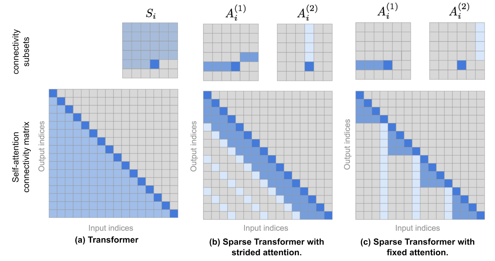
在 Transformer 中使用因子化自注意力
在 Transformer 架构中有三种使用稀疏因子化注意力模式的方式：
Sparse Transformer 还提出了一系列改动，以便将 Transformer 训练到数百层，包括梯度检查点、在反向传播中重新计算注意力 & FF 层、混合精度训练、高效的块稀疏实现等。更多细节请查阅 论文 或我之前那篇关于 的文章。如何在多个 GPU 上训练超大规模模型？
Blockwise Attention（Qiu et al. 2019）引入了一个稀疏块矩阵，只允许每个 token 关注一小部分其它 token。大小为 L \times L 的每个注意力矩阵被划分为 n \times n 个大小为 \frac{L}{n}\times\frac{L}{n} 的更小块，并由一个置换 \pi 定义稀疏块矩阵 \mathbf{M} \in \{0, 1\}^{L \times L}，该置换记录块矩阵中每行的列索引。{1, \dots, n}
Blockwise Attention 的实际实现只将 QKV 存储为块矩阵，每个大小为 n\times n：
其中 \hat{\mathbf{q}}_i、\hat{\mathbf{k}}_i 和 \hat{\mathbf{v}}_i 分别是 QKV 块矩阵中的第 i 行。每个 \mathbf{q}_i\mathbf{k}_{\pi(i)}^\top, \forall i = 1, \dots, n 的大小为 \frac{N}{n}\times\frac{N}{n}，因此 Blockwise Attention 能够将注意力矩阵的内存复杂度从 \mathcal{O}(L^2) 降低到 \mathcal{O}(\frac{L}{n}\times\frac{L}{n} \times n) = \mathcal{O}(L^2/n)。
局部与全局上下文的组合#
ETC（Extended Transformer Construction；Ainslie et al. 2019）、Longformer（Beltagy et al. 2020）和 Big Bird（Zaheer et al. 2020）模型在构建注意力矩阵时同时结合局部和全局上下文。这些模型都可以从已有的预训练模型初始化。
ETC 的全局-局部注意力（Ainslie et al. 2019）接受两个输入，(1) 大小为 n_l 的长输入 \mathbf{x}^l（常规输入序列）和 (2) 大小为 n_g 的全局输入 \mathbf{x}^g（包含较少数量的辅助 token n_g \ll n_l）。注意力因此根据这两个输入之间的方向性注意力被分为四个部分：g2g、g2l、l2g 和 l2l。由于 l2l 注意力部分可能非常大，它被限制为半径为 w 的固定大小注意力跨度（即局部注意力跨度），并且 l2l 矩阵可以被重塑为 n_l \times (2w+1)。
ETC 使用四个二值矩阵来处理结构化输入，\mathbf{M}^{g2g}、\mathbf{M}^{g2l}、\mathbf{M}^{l2g} 和 \mathbf{M}^{l2l}。例如，g2g 注意力部分中注意力输出 z^g = (z^g_1, \dots, z^g_{n_g}) 的每个元素 z^g_i \in \mathbb{R}^d 被格式化为：
其中 P^K_{ij} 是用于相对位置编码的可学习向量，C 是一个非常大的常数（论文中为 C=10000），用于在掩码关闭时抵消任何注意力权重。
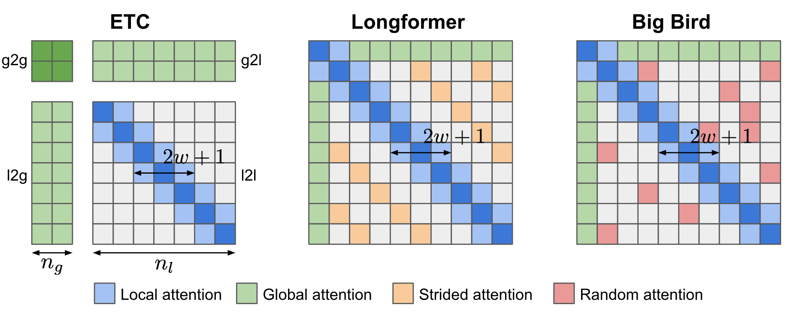
ETC 的另一项改进是在预训练阶段除了 通用语言模型 任务外，还加入了一个使用 的 CPC（对比预测编码）任务：当一个句子被掩盖时，其表示应该与它周围上下文的表示相似。对比表示学习
ETC 的全局输入 \mathbf{x}^g 构造如下：假设长输入中存在一些片段（例如按句子划分），每个片段附加一个辅助 token 来学习全局输入。使用相对位置编码来标记全局片段 token 的位置。在一个方向上进行硬掩码（即句子之前和之后的 token 被标记为不同）在某些数据集上被发现能带来性能提升。
Longformer 的注意力模式包含三个组成部分：
Big Bird 与 Longformer 非常相似，同时具备局部注意力和少数带有全局注意力跨度的预选 token，但 Big Bird 用一种新机制取代了膨胀注意力，即所有 token 都关注一组随机选择的 token。这种设计受到以下事实的启发：注意力模式可以看作一个 有向图，而 随机图 具有信息能够在任意一对节点之间快速流动的特性。
Longformer 在较低层使用较小的窗口大小，在较高层使用较大的窗口大小。消融实验表明这种设置比反过来或固定大小的配置效果更好。较低层不使用膨胀滑动窗口，以便更好地学习利用即时的局部上下文。Longformer 还采用分阶段训练过程：最初用小窗口大小训练模型以从局部上下文学习，然后后续阶段逐渐增大窗口大小并降低学习率。
基于内容的注意力#
Reformer（Kitaev, et al. 2020）提出的改进旨在解决 vanilla Transformer 中的以下痛点：
Reformer 提出了两个主要改动：
局部敏感哈希注意力
在注意力公式的 \mathbf{Q} \mathbf{K}^\top 部分，我们只对最大的元素感兴趣，因为只有大元素在 softmax 后贡献很大。对于每个查询 \mathbf{q}_i \in \mathbf{Q}，我们寻找 \mathbf{K} 中最接近 \mathbf{q}_i 的行向量。为了在高维空间中快速找到最近邻，Reformer 将 局部敏感哈希（LSH） 融入其注意力机制。
如果一个哈希方案 x \mapsto h(x) 能够保持数据点之间的距离信息，使得相近的向量获得相似的哈希，而相距远的向量获得差异很大的哈希，则称其为局部敏感的。Reformer 采用的哈希方案如下，给定一个固定的随机矩阵 \mathbf{R} \in \mathbb{R}^{d \times b/2}（其中 b 是一个超参数），哈希函数为 h(x) = \arg\max([xR; −xR])。
如果我们省略自注意力中的标量并将分母归纳为一个归一化项 Z(.)，普通的注意力输出如下： <div>
</div>
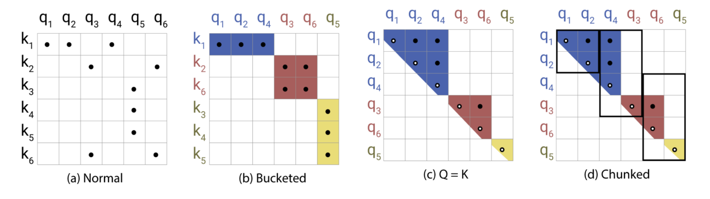
在 LSH 注意力中，一个查询只能关注同一哈希桶中的位置 S_i = \{j: h(\mathbf{q}_i) = h(\mathbf{k}_j)\}。其过程如下图 20 所示：

可逆残差网络
Reformer 的另一个改进是使用可逆残差层（Gomez et al. 2017）。可逆残差网络的动机是设计一种架构，使得任何给定层的激活都可以仅使用模型参数从下一层的激活中恢复。因此，我们可以通过在反向传播时重新计算激活而不是存储所有激活来节省内存。
给定一层 x \mapsto y，普通的残差层执行 y = x + F(x)，但可逆层将输入和输出都拆分为成对 (x_1, x_2) \mapsto (y_1, y_2)，然后执行以下操作：
反向操作很简单：
Reformer 将同样的思想应用到 Transformer 中，在一个可逆网络块内组合注意力（F）和前馈层（G）：
内存可以通过将前馈计算分块进一步减少：
得到的可逆 Transformer 不需要在每一层都存储激活。
Routing Transformer（Roy et al. 2021）同样构建在基于内容的键和查询聚类之上。它没有使用像 LSH 这样的静态哈希函数，而是利用在线 k 均值聚类，并将其与局部、时间稀疏注意力结合，将注意力复杂度从 O(L^2) 降低到 O(L^{1.5})。
在路由注意力中，键和查询都使用 k 均值聚类方法进行聚类，并使用同一组中心 \boldsymbol{\mu} = (\mu_1, \dots, \mu_k) \in \mathbb{R}^{k \times d}。查询被路由到被分配到同一中心的键。总复杂度为 O(Lkd + L^2d/k)，其中 O(Lkd) 用于运行聚类分配，O(L^2d/k) 用于注意力计算。聚类中心通过 EMA（指数移动平均）使用所有关联的键和查询进行更新。
在 Routing Transformer 的实验中，一些最佳配置只在模型的最后两层启用路由注意力，并且只在一半的注意力头上启用，而另一半使用局部注意力。他们还观察到局部注意力是一个相当强的 baseline，并且更大的注意力窗口总是能带来更好的结果。
低秩注意力#
Linformer（Wang et al. 2020）用一个低秩矩阵近似完整的注意力矩阵，将时间和空间复杂度降低为线性。它没有使用昂贵的 SVD 来确定低秩分解，而是为键和值矩阵分别添加两个线性投影 \mathbf{E}_i, \mathbf{F}_i \in \mathbb{R}^{L \times k}，将其维度从 L \times d 降低到 k \times d。只要 k \ll L，注意力内存就可以大幅减少。
还可以应用额外技术来进一步提高 Linformer 的效率：
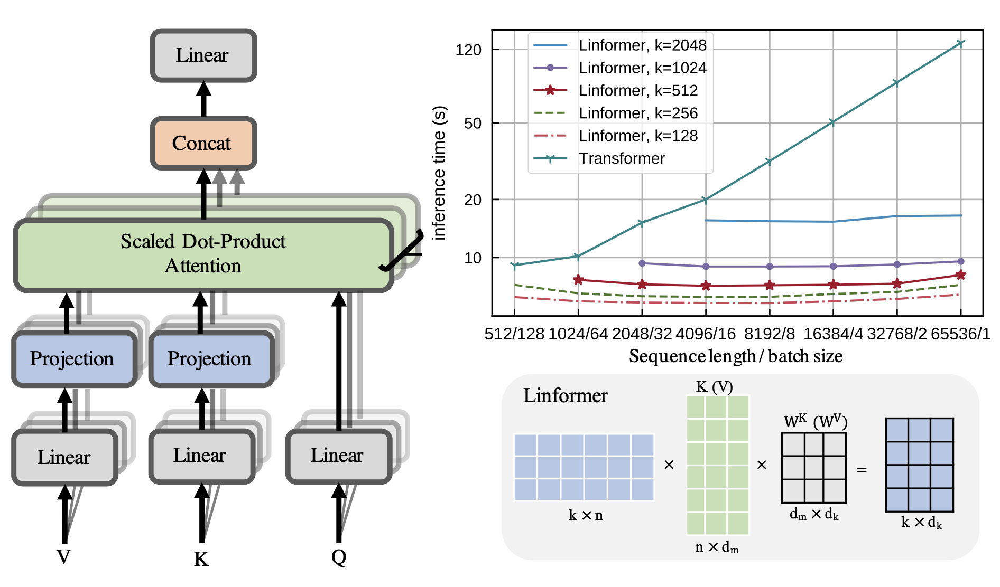
随机特征注意力（RFA；Peng et al. 2021）依赖随机特征方法（Rahimi & Recht, 2007）来近似自注意力中的 softmax 操作，使用低秩特征映射，从而实现线性的时间和空间复杂度。Performer（Choromanski et al. 2021）也采用随机特征注意力，并在核构造上进行了改进，以进一步减少核近似误差。
RFA 背后的主要定理来自 Rahimi & Recht, 2007：
设 \phi: \mathbb{R}^d \to \mathbb{R}^{2D} 是一个非线性变换：
当 d 维随机向量 \mathbf{w}_i 是从 \mathcal{N}(\mathbf{0}, \sigma^2\mathbf{I}_d) 独立同分布采样时，
\exp(\mathbf{x} \cdot \mathbf{y}) 的无偏估计为：
然后我们可以将注意力函数写成如下形式，其中 \otimes 是外积运算，\sigma^2 是温度系数：
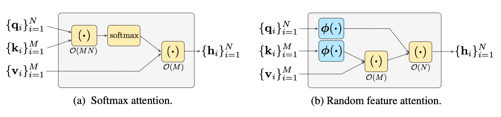
因果注意力 RFA 要求时刻 t 的 token 只关注更早的键和值 \{\mathbf{k}_i\}_{i \leq t}, \{\mathbf{v}_i\}_{i \leq t}。让我们使用一个变量元组 (\mathbf{S}_t \in \mathbb{R}^{2D \times d}, \mathbf{z} \in \mathbb{R}^{2D}) 来跟踪时刻 t 的隐藏状态历史，类似于 RNN：
其中 2D 是 \phi(.) 的大小，并且 D 应该不小于模型大小 d 以获得合理的近似。
RFA 在自回归解码中带来了显著加速，其内存复杂度主要取决于构造核 \phi(.) 时 D 的选择。
Performer 通过使用正的随机特征映射修改随机特征注意力，以减少估计误差。它还保持随机采样的 \mathbf{w}_1, \dots, \mathbf{w}_D 相互正交，以进一步降低估计器的方差。
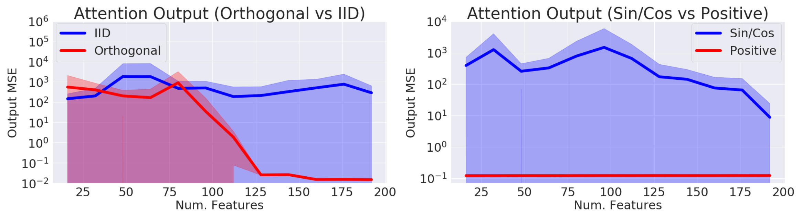
用于强化学习的 Transformer#
自注意力机制避免了将整个过去压缩到一个固定大小的隐藏状态中，并且不像 RNN 那样容易遭受梯度消失或爆炸。强化学习任务无疑可以从这些特性中受益。然而，即使在监督学习中训练 Transformer 也相当困难，更不用说在 RL 环境中了。毕竟，仅仅稳定并训练一个 LSTM 智能体本身就已经很有挑战性。
Gated Transformer-XL（GTrXL；Parisotto, et al. 2019）是尝试将 Transformer 用于 RL 的一次努力。GTrXL 通过在 Transformer-XL 基础上进行两处改动成功稳定了训练：
门控函数的参数被显式初始化为接近单位映射——这就是为什么存在 b_g 项。一个 b_g > 0 极大地有助于加快学习速度。
Decision Transformer（DT；Chen et al 2021）将强化学习问题表述为条件序列建模过程，在期望回报、过去的状态和动作的条件下输出最优动作。因此使用 Transformer 架构就变得直截了当。Decision Transformer 适用于 强化学习简史（长文），其中模型只能访问由其它策略收集的固定轨迹集合。
为了鼓励模型学习如何行动以实现期望的回报，它向模型提供期望的未来回报 \hat{R} = \sum_{t’=t}^T r_{t’} 而不是当前奖励。轨迹由一个三元组列表组成（return-to-go \hat{R}_t, state s_t, action a_t$），并被用作 Transformer 的输入序列：
针对 return-to-go、状态和动作分别添加并训练三个线性层来提取 token 嵌入。预测头学习预测与输入 token s_t 对应的 a_t。训练对离散动作使用交叉熵损失，对连续动作使用 MSE。在他们的实验中，预测状态或 return-to-go 并未被发现能改善性能。
实验将 DT 与几种无模型 RL 算法 baseline 进行了对比，结果显示：
引用#
引用格式：
Weng, Lilian. (Jan 2023). The transformer family version 2.0. Lil’Log. https://lilianweng.github.io/posts/2023-01-27-the-transformer-family-v2/.
@article{weng2023transformer,
title = "The Transformer Family Version 2.0",
author = "Weng, Lilian",
journal = "lilianweng.github.io",
year = "2023",
month = "Jan",
url = "https://lilianweng.github.io/posts/2023-01-27-the-transformer-family-v2/"
}
参考文献#
[1] Ashish Vaswani, et al. “Attention is all you need.” NIPS 2017.
[2] Rami Al-Rfou, et al. “Character-level language modeling with deeper self-attention.” AAAI 2019.
[3] Olah & Carter, “Attention and Augmented Recurrent Neural Networks”, Distill, 2016.
[4] Sainbayar Sukhbaatar, et al. “Adaptive Attention Span in Transformers”. ACL 2019.
[5] Rewon Child, et al. “Generating Long Sequences with Sparse Transformers” arXiv:1904.10509 (2019).
[6] Nikita Kitaev, et al. “Reformer: The Efficient Transformer” ICLR 2020.
[7] Alex Graves. (“Adaptive Computation Time for Recurrent Neural Networks”)[https://arxiv.org/abs/1603.08983]
[8] Niki Parmar, et al. “Image Transformer” ICML 2018.
[9] Zihang Dai, et al. “Transformer-XL: Attentive Language Models Beyond a Fixed-Length Context.” ACL 2019.
[10] Aidan N. Gomez, et al. “The Reversible Residual Network: Backpropagation Without Storing Activations” NIPS 2017.
[11] Mostafa Dehghani, et al. “Universal Transformers” ICLR 2019.
[12] Emilio Parisotto, et al. “Stabilizing Transformers for Reinforcement Learning” arXiv:1910.06764 (2019).
[13] Rae et al. “Compressive Transformers for Long-Range Sequence Modelling.” 2019.
[14] Press et al. “Train Short, Test Long: Attention With Linear Biases Enables Input Length Extrapolation.” ICLR 2022.
[15] Wu, et al. “DA-Transformer: Distance Aware Transformer” 2021.
[16] Elabyad et al. “Depth-Adaptive Transformer.” ICLR 2020.
[17] Schuster et al. “Confident Adaptive Language Modeling” 2022.
[18] Qiu et al. “Blockwise self-attention for long document understanding” 2019
[19] Roy et al. “Efficient Content-Based Sparse Attention with Routing Transformers.” 2021.
[20] Ainslie et al. “ETC: Encoding Long and Structured Inputs in Transformers.” EMNLP 2019.
[21] Beltagy et al. “Longformer: The long-document transformer.” 2020.
[22] Zaheer et al. “Big Bird: Transformers for Longer Sequences.” 2020.
[23] Wang et al. “Linformer: Self-Attention with Linear Complexity.” arXiv preprint arXiv:2006.04768 (2020).
[24] Tay et al. 2020 “Sparse Sinkhorn Attention.” ICML 2020.
[25] Peng et al. “Random Feature Attention.” ICLR 2021.
[26] Choromanski et al. “Rethinking Attention with Performers.” ICLR 2021.
[27] Khandelwal et al. “Generalization through memorization: Nearest neighbor language models.” ICLR 2020.
[28] Yogatama et al. “Adaptive semiparametric language models.” ACL 2021.
[29] Wu et al. “Memorizing Transformers.” ICLR 2022.
[30] Su et al. “Roformer: Enhanced transformer with rotary position embedding.” arXiv preprint arXiv:2104.09864 (2021).
[31] Shaw et al. “Self-attention with relative position representations.” arXiv preprint arXiv:1803.02155 (2018).
[32] Tay et al. “Efficient Transformers: A Survey.” ACM Computing Surveys 55.6 (2022): 1-28.
[33] Chen et al., “Decision Transformer: Reinforcement Learning via Sequence Modeling” arXiv preprint arXiv:2106.01345 (2021).